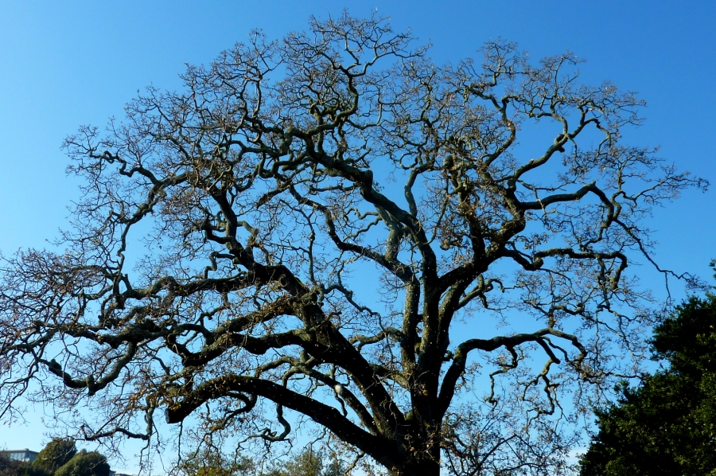

A key part to generative design and code is pattern and routine. Akin to a chess player, marking each move down, and keeping a trace of your decisions can prove useful for your own process and future making. As a designer, to know that there might be a variety of possibilities to a given situation, can aid our ways of observing by using tools in novel ways. In one series of work, Van Rossum looks to fundamentals of waveforms as a departure point and reference point for connecting an interface to affecting the parameters of a letterform. If the letters explode, so too would the speakers. Find 1 unique example of a pattern in nature, that appears to be programmatic. Post a visual of this pattern and describe how it is programmatic in nature.
I think trees are a good example of a natural programmatic pattern. All trees start with a trunk or one solid line. From there they split off into different smaller branches or paths. This repeats indefinitely. Nearly every species of trees follows this pattern and yet there are many trees within the same classification that significantly vary from others. This is because the set of rules established via the rules set from the programmatic pattern are merely a guideline.
For this assignment, you are tasked with developing a daily practice of "code sketches." Rather than constructing a single project, your goal is to allot daily time to exploring generative art. With your assigned letter as your inspiration, create 21 code “sketches” of that letter in p5 over the course of 3 weeks.